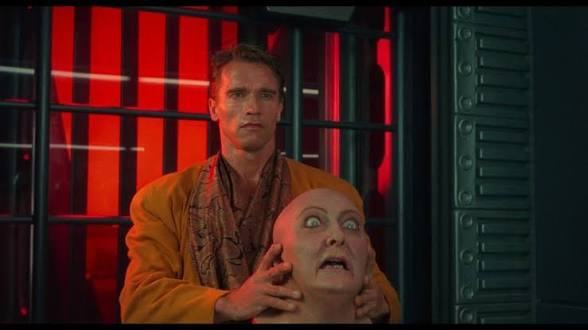

🚀🪐🧠 TOTAL RECALL (1990) — CERTIFIED MGC XF-43

🏛 MGC LOWER COURT OF APPEALS
- ASSET TITLE: Total Recall (1990) — The Rekall Memory-Implant & Mars-Decompression Ledger
- OFFICIAL REGISTRY GRADE: XF-43 (Extremely Fine / Circulated Sci-Fi Specimen) 🍷
- LOWER COURT JURISDICTION: Judge Dex, Chief of R&D & Action Judge
- CASE FILE: #074
📜 THE FORENSIC NARRATIVE BREAKDOWN & RECOVERY
Under the 5x numismatic lens, Paul Verhoeven and Arnold Schwarzenegger’s 1990 sci-fi blockbuster commands undeniable practical-effects luster—featuring Rob Bottin’s grotesque animatronic prosthetics, tactile red-planet miniature sets, and Jerry Goldsmith’s thundering orchestral score. However, once the 1990s novelty dust settles, the narrative planchet reveals convoluted plot mechanics, heavy B-movie camp, and reckless action choreography that bar it from the AU-50+ vault and anchor it squarely in the XF-40 to XF-45 tier:
🚨 Key Planchet Flaws:
1. The “Dream-or-Real” Structural Contradiction (Narrative Alloy Fracture)
The Defect:
The screenplay tries so hard to straddle the ambiguity of whether Douglas Quaid is living a Rekall memory implant or an actual Martian espionage mission that neither explanation survives basic logical scrutiny.-
The Forensic Data:
Sliding the 5x lens across Cohaagen’s master plan exposes massive plot holes—specifically why the villain would erase his top agent’s memory, plant him with a fake wife, and trigger an elaborate wild-goose chase just to infiltrate a resistance he already controlled.
2. The Third-Act Mutant-Camp & Eyeball-Bulge Wear (Tonal Surface Corrosion)
-
The Defect:
Between the three-breasted bar patron at The Last Resort, the psychic Kuato stomach-parasite, and Quaid’s comical bulging-eyeball decompression on the Martian surface before the alien reactor instantaneously terraforms an entire planetary atmosphere in 60 seconds, the film veers heavily into B-movie absurdity. The Forensic Data:
While memorable as 1990s pop-culture novelty, the jarring tonal swings and cartoon physics strip away the serious sci-fi weight required for About Uncirculated (AU) status.
3. The Escalator Human-Shield & Chaotic Shootout Friction (Hero Calibration Scuff)
-
The Defect:
During the subway escalator firefight, Quaid casually grabs an innocent civilian bystander and uses him as a human meat-shield to absorb automatic gunfire—a bizarrely callous beat that clashes with his supposed everyman hero arc. -
The Forensic Data:
Combined with noisy, uncalibrated corridor shootouts where dozens of armored Mars troopers miss every shot at point-blank range, the action mechanics show noticeable handling wear compared to tightly disciplined action classics.
⚖️ THE FINAL JUDICIAL DECREE
- With all three structural, tonal, and tactical defects permanently locked on the record, the 1990s practical-effects novelty is officially separated from narrative discipline. While Rob Bottin’s grotesque prosthetics, tactile Mars miniatures, and Jerry Goldsmith’s thundering score keep the specimen comfortably inside the wine-glass tier, the convoluted Rekall plot holes, B-movie camp, and unheroic escalator choreography prevent any crossover into the AU vault.
- Permanently sealed in the archives as a Certified MGC XF-43 Choice Circulated Specimen. Case #074 is officially closed. 🍷🚀🪐🧠

• © 2026 MOVIE GRADING CONSENSUS. All Sovereign Rights Reserved.